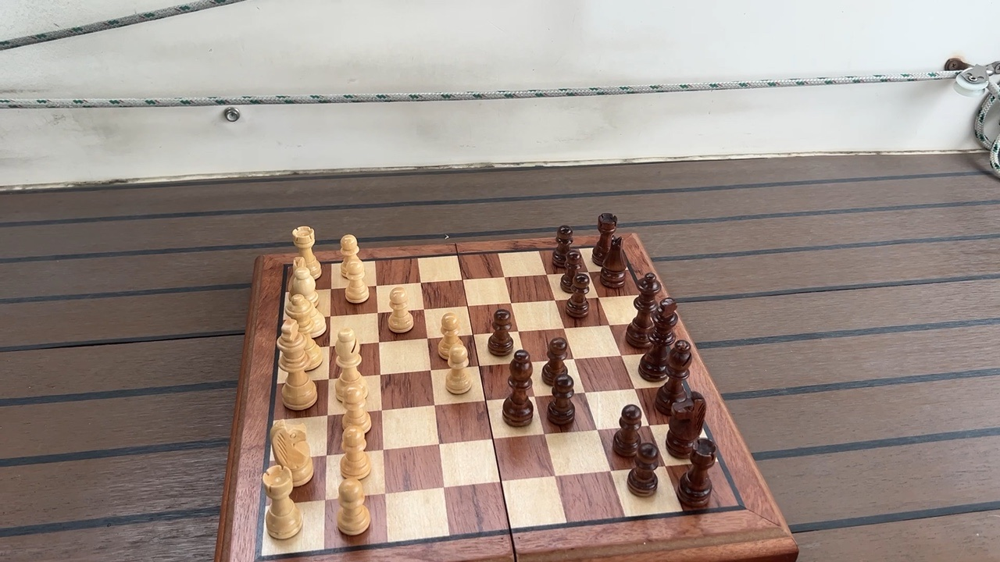

Примеры изображений
Изображения, чтобы попробовать Chess Analyzer. На iPhone или iPad нажмите на изображение и удерживайте › «Сохранить в Фото», затем в приложении используйте Choose Photo…
Диаграмма из книги
Position › ⋯ › Read a Diagram › Choose Photo…

Печатная партия
Games › + › Choose Photo…

Настоящие доски
Position › ⋯ › Read a Real Board › Choose Photo…
